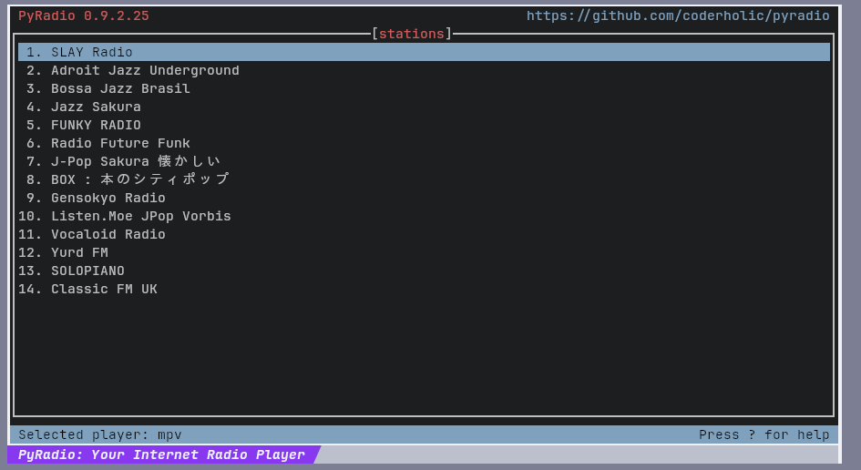
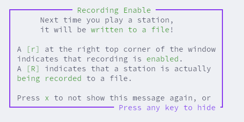
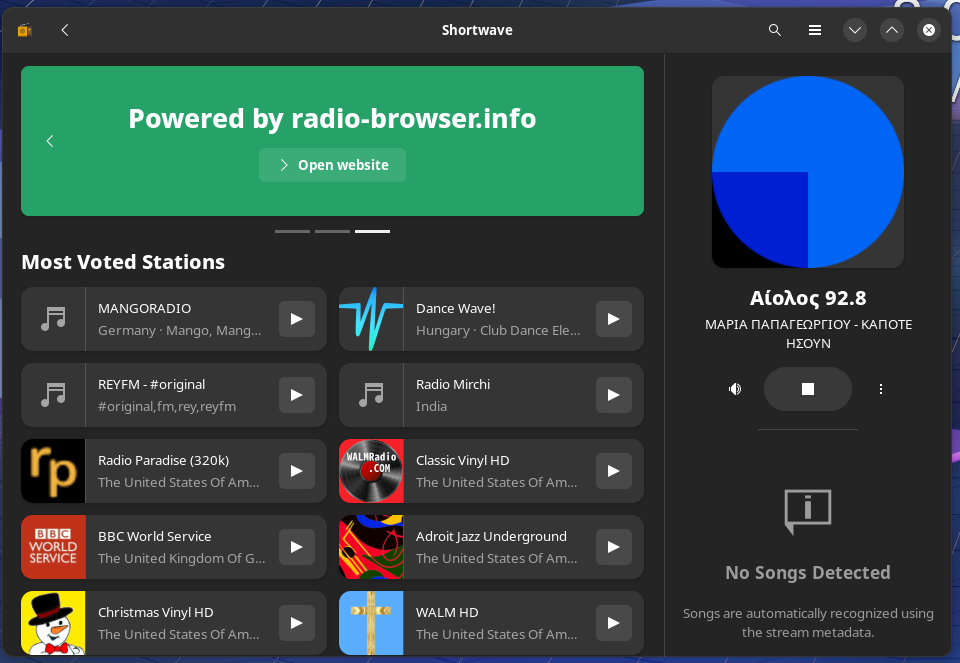

A different way to listen to music have been forgotten: music radio. Although some of us may might have listen to the radio in the car, in the digital world, it is easy to get accustomed to listening songs in demand and making your own music playlists in music platforms like Spotify and Youtube. There is nothing wrong with that. I have been doing that for years and still do. However, for the past couple of months, I have been trying out internet radio too. Despite its limitations, internet radio provide a viable alternative music listening experience to modern streaming services.
Internet radios give a predetermined program of music to listen to. Although being unable to choose your songs may seem like a flaw at first, this lack of choice could also be useful.
It can save valuable time spent on choosing songs or making playlists. In Spotify, I would need manually pick out every song in my playlist. And even after that, you might need to search for new songs to avoid the playlist getting too repetitive. With internet radio, when I feel like listening to a certain genre, I will choose a radio that focuses on that genre. Without no human input needed, radio cuts away a lot of inconveniences, making song selection automatic.
Furthermore, because of this, listening to the radio is an effective method to listen to a range of different music which you have been never exposed to. For example, one of my favorite radios I discovered is SLAY Radio which focuses on C64 remixes. I do not know anything about C64 remixes but if I want to listen to it, I do not need to find C64 artist or search up any songs - I just hop in to SLAY radio. By using a radio over a streaming service, it entirely wipes out the process of finding music by yourself.
Yes, a lot of streaming services now make auto-generated playlists which allow you to do the same thing. However, there are certain advantages you will see only in internet radio.
For starters, it is completely free. With just an URL link, you can access any radio through the internet. Now the only caveat is that some radios feature advertisements, which I will discuss later.
Furthermore, there are multiple applications or in other words, clients for internet radio. Because internet radio is based on open protocols, anyone can make a internet radio client. They are easy to find one that fits your needs, and if you do not like one, you can always find another. My preferred client is PyRadio which are for geeks like me that want listen to radio even at the terminal!
Finally, in some countries, you can legally record off from radios for offline listening. Although there are methods to download music for free like yt-dlp, radio could be an ethical way to download music. Not a lot of radio clients can do this, but for the clients that can, it is awesome. Some clients like Shortwave can cut individual songs automatically which is convenient.
Like I mentioned earlier, some radios have some advertisements. This is going to vary between radios. There are many great radios that have no interruptions at all. In some radios like SLAY Radio, there will only short voice-overs reminding what radio station you are listening to between songs. Others like Classic FM UK offer insights before each song. However, some internet radios takes a minute before starting for product advertisements. There had been times where I felt the advertisements were really annoying, but sometimes it just comes down in finding the best radios to listen to. Ultimately radios are free though so it is difficult to complain about the advertisements.
Another thing to be aware of is that you cannot be too picky of what music you listen to. The truth is that not every song in the radio is good, and I sometimes switch between radios to just avoid a bad song. Furthermore, you also might have difficulty finding radios with niche taste. If having high audio quality is important to you, you will be limited to a smaller number of radios.
There are multiple internet radio clients for desktop and mobile. Here is a list of some of them, but you can easily search them up too. Many application have builtin radio search which are easy to use.
For applications where you have to manually insert radio stream links, I like to use radio-browser to find new radio stations. You can search for radios based on country and tags. By personal experience, I recommend sorting by the number of votes rather than clicks.
Below are some of my favorite radios. Feel free to explore:
| Radio name | Genre | Stream Link |
|---|---|---|
| SLAY Radio | C64 music remixes | Stream Link |
| Adriot Jazz Underground | Jazz | Stream Link |
| Bossa Jazz Brasil | Sometimes bossa nova, sometimes jazz | Stream Link |
I hope this encourages you to try internet radio. To be clear, I do not think internet radio should be a full on replacement to streaming services. There are clear advantages for both, and I only really listen to internet radio 20% of the time. Thanks for reading and feel free to give me any feedback.
This work by thairanaru is licensed under Creative Commons Attribution-NonCommercial-ShareAlike 4.0 International